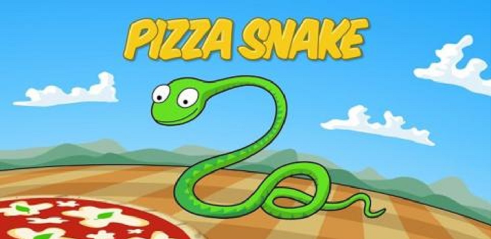
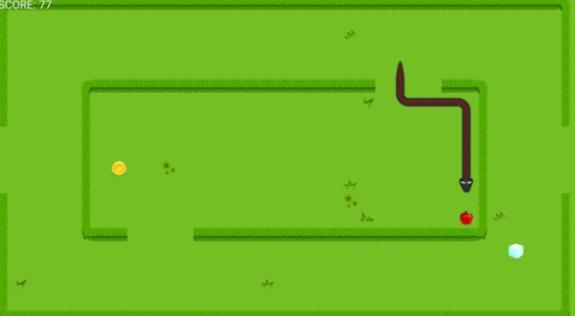

背景设定
1976年，Gremlin平台推出了一款经典街机游戏Blockade。游戏中，两名玩家分别控制一个角色在屏幕上移动，所经之处砌起围栏。角色只能向左、右方向90度转弯，游戏目标保证让对方先撞上屏幕或围栏。 听起来有点复杂，其实就是下面这个样子;
基本上就是两条每走一步都会长大的贪吃蛇比谁后完蛋，玩家要做的就是避免撞上障碍物和越越长的身体。更多照片、视频可以看 GamesDBase 的介绍。
Blockade 很受欢迎，类似的游戏先后出现在 Atari 2600、TRS-80、苹果 2 等早期游戏机、计算机上。但真正让这种游戏形式红遍全球的还是21年后随诺基亚手机走向世界的贪吃蛇游戏——Snake。

游戏特色
贪食蛇游戏操作简单，可玩性比较高。这个游戏难度最大的不是蛇长得很长的时候，而是开始。那个时候蛇身很短，看上去难度不大，却最容易死掉，因为把玩一条小短蛇让人容易走神，失去耐心。由于难度小，你会不知不觉加快调整方向的速度，在游走自如的时候蛇身逐渐加长了，而玩家却没有意识到危险，在最得意洋洋的一刻突然死亡。
贪食蛇的另一个危险期在于游戏开始几十秒之后。由于玩家的注意力高度集中，精神紧张，此时局面稍好，就会不由自主地想放松一下，结果手指一松劲，贪食蛇就死了。所以贪食蛇可以算作一个敏捷型的小游戏。
操作指南
玩家使用方向键操控一条长长的蛇不断吞下豆子，同时蛇身随着吞下的豆子不断变长，当蛇头撞到蛇身或障壁时游戏结束。贪吃蛇最初为人们所知的是诺基亚手机附带的一个小游戏，它伴随着诺基亚手机走向世界。现在的贪吃蛇出现了许多衍生版本，并被移植到各种平台上。

游戏评价
和别的游戏不同，贪食蛇是一个悲剧性的游戏。许多电子游戏都是以操作者的胜利而告终，而贪食蛇的结局却是死亡。不管玩得多么纯熟，技术多么高超，你最终听到的都是贪食蛇的一声惨叫。当手机上的小蛇越长越长，积分越来越高的时候，死亡也就越来越近。那时候忙的不是为了吃豆子长身体，而是为了避免撞墙。你会发现你穷于应付，四处奔忙。贪食蛇最要命的就在一个“贪”字上。